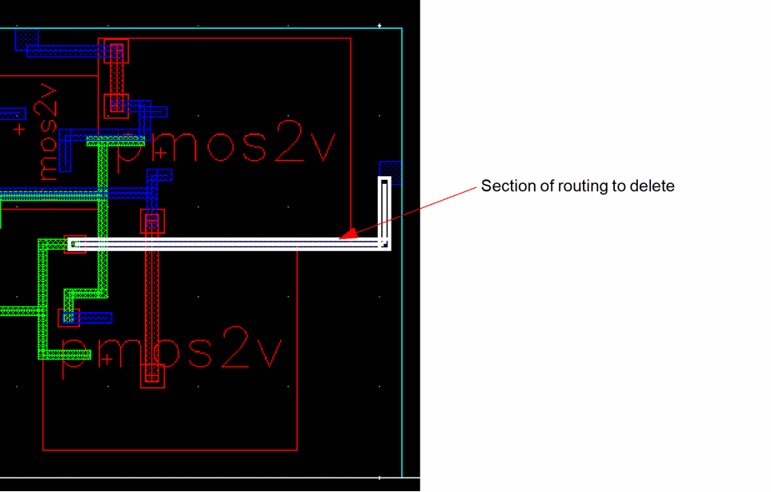
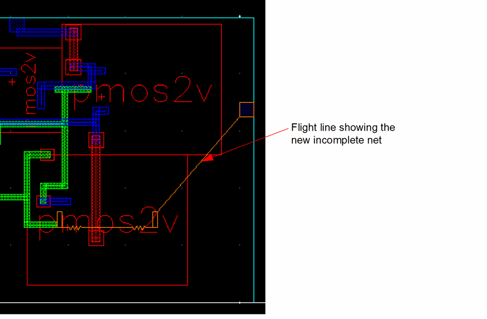
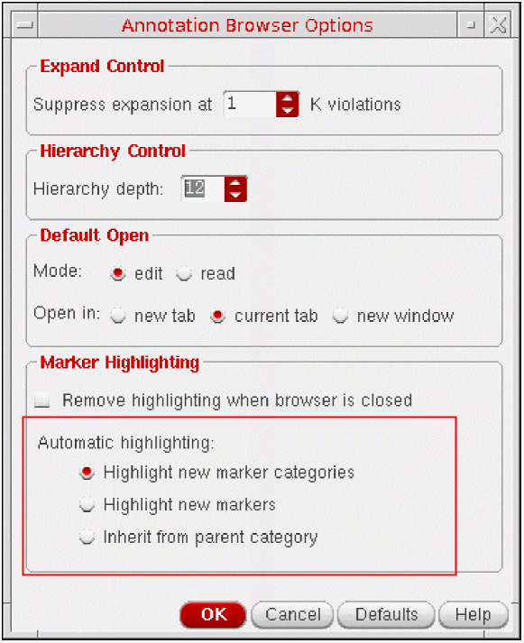

Showing Newly Created Incomplete Nets Automatically
Layout XL can automatically show flight lines representing new incomplete nets you create during interactive editing. To do this,
-
In a layout window, delete a piece of routing material on a complete net.
The system automatically shows a flight line representing the new incomplete net you created.

You control this behavior using the Automatic Highlighting options in the

By default, the system highlights markers only when a new marker category is created, for example a new incomplete net.
To automatically highlight a new open marker created on an existing incomplete net, set automatic highlighting to Highlight new markers.
To give a newly-created marker the same visibility as its parent category, set automatic highlighting to Inherit from parent category.
Related Topics
Return to top